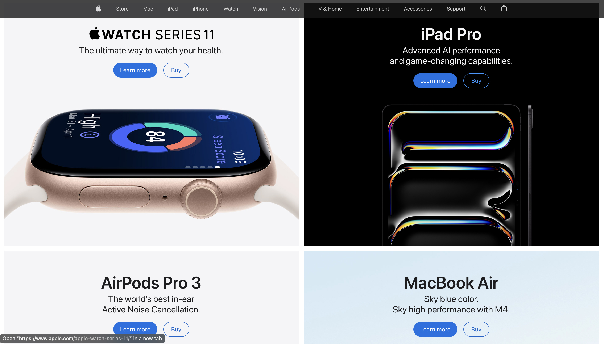
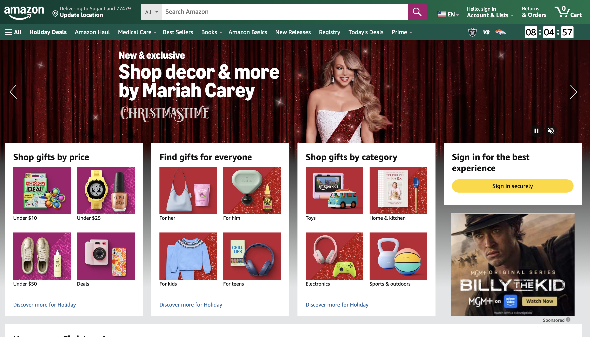

Typography Comparison: Apple vs. Amazon
Typography plays a major role in how websites communicate with their audiences. The choice of font, spacing, and layout can completely change the tone of a page. In this article, I compare the use of typography on Apple and Amazon, focusing on how each brand’s design supports its identity and user experience.
Apple

Apple’s typography is sleek, minimal, and consistent across all pages. The company uses its own custom typeface, San Francisco, which is clean and modern. The large headings, generous spacing, and simple color palette give the site a refined, elegant look. Every element feels intentional and balanced, which aligns with Apple’s overall brand image of innovation and simplicity.
Because Apple’s design relies heavily on white space and subtle contrasts, the typography feels calm and easy to read. The result is a visual experience that feels high-end and professional, reinforcing the luxury and precision of Apple products.
Amazon

Amazon’s typography, on the other hand, is more practical and information-heavy. The site primarily uses Amazon Ember and Arial for readability and efficiency. Fonts are smaller and tighter, allowing more text to fit on each page. This approach prioritizes function over aesthetics, reflecting Amazon’s focus on usability and quick access to products.
The dense layout, combined with bold headings and contrasting colors, helps users scan through large amounts of information quickly. While it may not look as elegant as Apple’s site, it’s highly effective for an e-commerce platform that handles thousands of listings and user interactions daily.
Comparison
Both Apple and Amazon use typography to serve their unique goals. Apple’s design highlights beauty and clarity, encouraging users to slow down and admire the visuals. Amazon’s design emphasizes efficiency and readability, helping users navigate and make quick decisions. In other words, Apple’s typography communicates experience, while Amazon’s communicates function.
Typography isn’t just about choosing a font, it’s about how text supports the purpose of a site. Apple and Amazon show two successful but opposite ways to use typography to strengthen a brand’s identity and user experience.